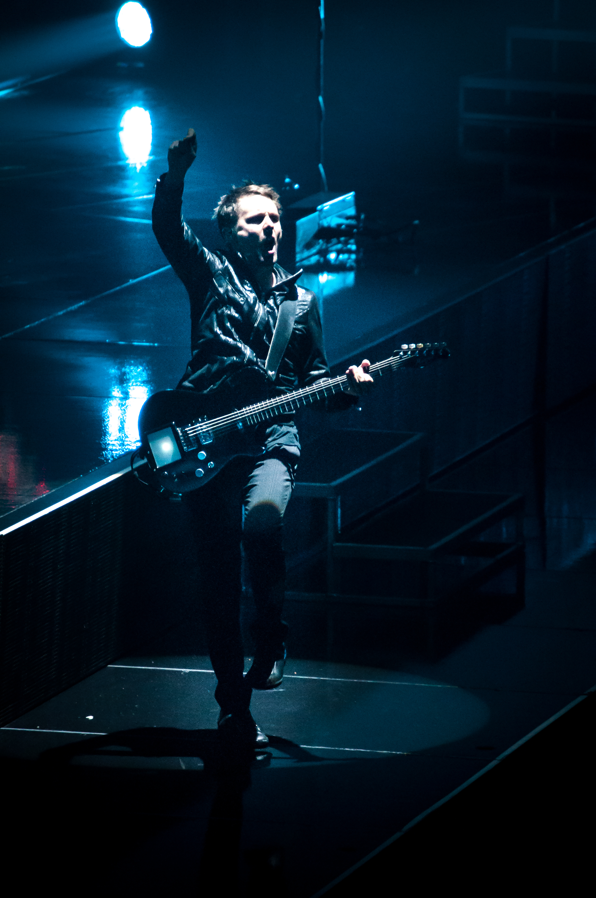
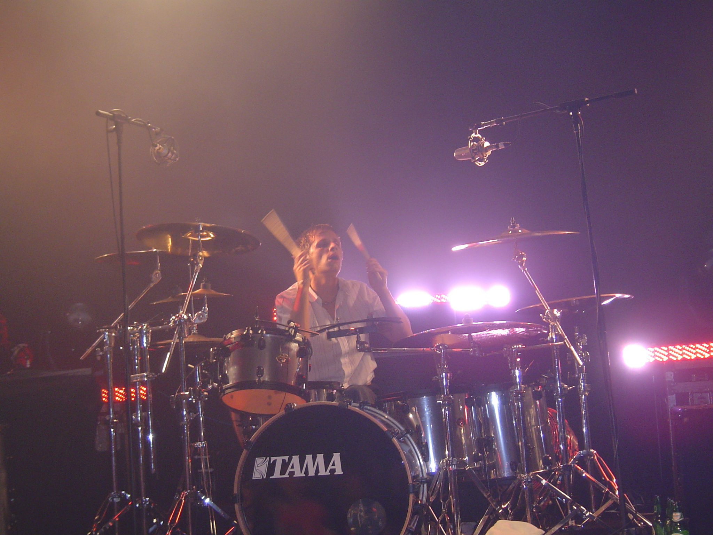
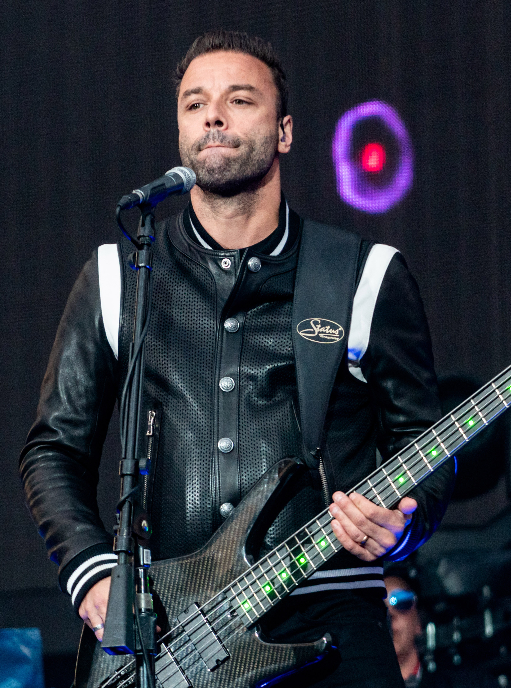

Muse est un groupe de rock britannique, originaire de Teignmouth, dans le Devon. Apparu sur la scène musicale en 1994, le trio est composé de Matthew Bellamy (chant, guitare, piano), Christopher Wolstenholme (basse, harmonica, chant, chœurs) et Dominic Howard (batterie, percussions)
Muse a réalisé dix albums studio depuis ses débuts qui sont Showbiz (1999), Origin of Symmetry (2001), Absolution (2003), Black Holes and Revelations (2006), The Resistance (2009), The 2d Law (2012), album qui prend la première place des classements dans plusieurs pays tels que le Royaume-Uni et la France, Drones (2015), Simulation Theory (2018), Will of the People (2022) et The Wow! Signal (2026). Ils sont également les auteurs de plusieurs DVD live : Hullabaloo (2002), Absolution Tour (2005), HAARP (2008), Live at Rome Olympic Stadium (2013), Drones (2018), Simulation Theory (2020)
Les trois artistes se sont rencontrés dans les années 1990 au Teignmouth Community College, à Teignmouth (dans le Devon, Royaume-Uni). Ils appartiennent alors à des formations musicales différentes. En 1992, âgés de treize à quatorze ans, ils créent le groupe Gothic Plague. Après sa création, le groupe change fréquemment de nom, comme Carnage Mayhem, Fixed Penalty, Rocket Baby Dolls, ou encore Young Blood (cet ordre est incertain, puisque Muse a donné des interviews contradictoires à ce sujet). Ils peinent à se faire connaître en dehors du Devon
Le groupe témoigne d'une recherche compositionnelle qui rappelle l'influence de la musique classique : utilisation de thème et contre-thème, développements et reprises, arpèges au clavier, contrepoint, etc. Sergueï Rachmaninov, Frédéric Chopin, Franz Liszt, Piotr Ilitch Tchaïkovski, Hector Berlioz et Camille Saint-Saëns sont des compositeurs romantiques ayant influencé Matthew Bellamy dans nombre de ses compositions

chant, guitare électrique, kitara, piano, synthétiseur

batterie, percussions, sample

guitare basse, chœurs, synthétiseur, guitare, harmonica, keytar
retrouvez toutes les infos sur le groupe , les tournées, le merch sur le site officiel ici